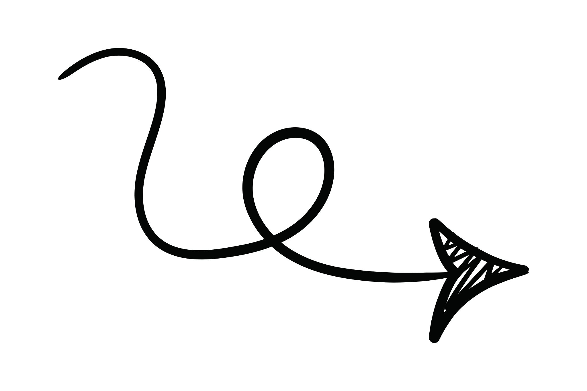
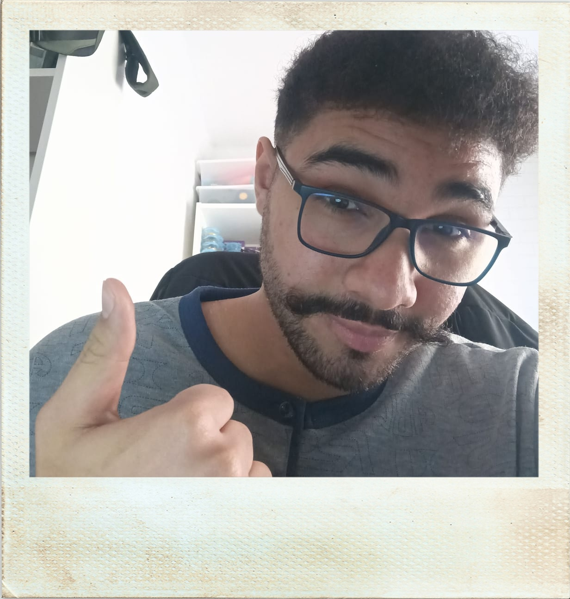

¡Hola!
Soy Ayman Bourhim.


Un desarrollador apasionado por crear páginas web limpias y funcionales
Contáctame ✉️ Descargar CV ⬇️ Linkedin Github
Github

Experiencia
- Montado, mantenimiento y resolución de problemas de ordenadores
- 📍 Barca electrodomesticos - Santa Coloma de Gramanet, 2024 - 2025
- 🛠️ Trabajos esporádicos para cumplir mucha demanda, aprendí a trabajar con herramientas de mantenimiento y reparación de ordenadores, y solucionar problemas de software.
- Practicas FCT como Programador Web
- 📍 Reset Soluciones | septiembre 2024 - julio 2025
- 🛠️ Hice la FCT en DAW y trabaje en Reset siendo principalmente programador web, creando, arreglando y alojando paginas, también hice de asistente informático general según demanda.
Educación
- Bachillerato Tecnológico
- 📍 Institut Puig Castellar | 2020 - 2022
- 🎓 Aquí considero que aprendí a ser una persona más autónoma y responsable, la dificultad creciente junto a la preparación para la selectividad redefinio mi forma de pensar y trabajar.
- Grado Superior en Desarrollo de Aplicaciones Web
- 📍 IES Manuel Vázquez Montalbán | 2022 - 2025
- 🎓 Aprendí a programar en lenguajes como Java, HTML, CSS, JavaScript, React y Node.js. Me enseñaron a utilizar bases de datos SQL y NoSql, además de aprender metodologías de desarrollo ágil y trabajo en equipo.
Stack Técnico
HTML, CSS, JavaScript, React, Node.js, TailwindCSS